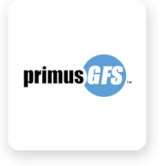
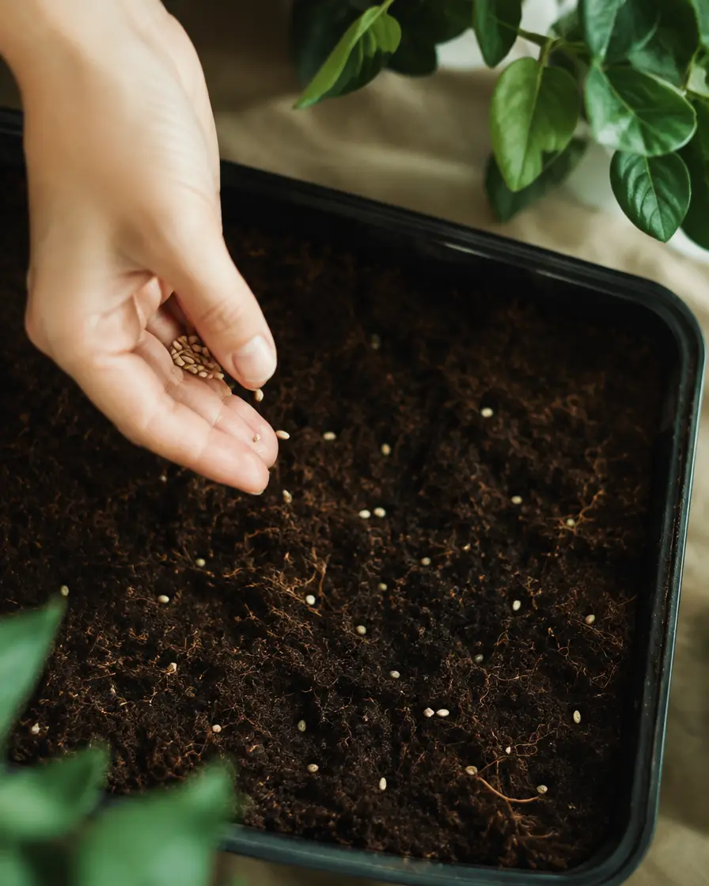
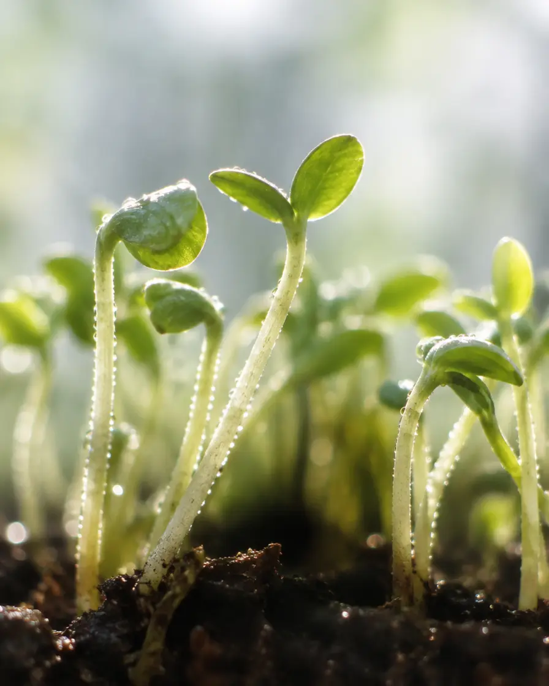
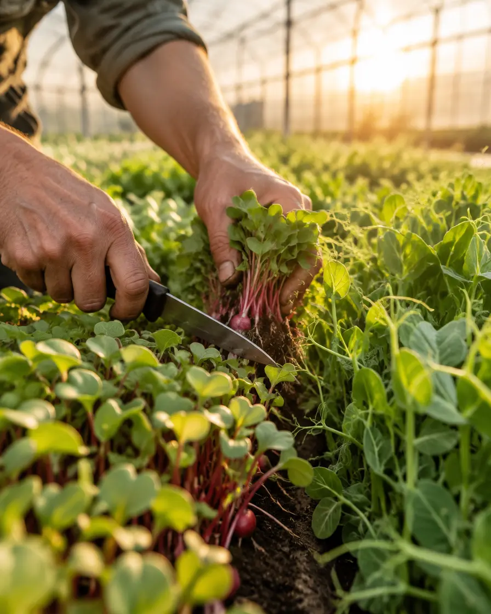
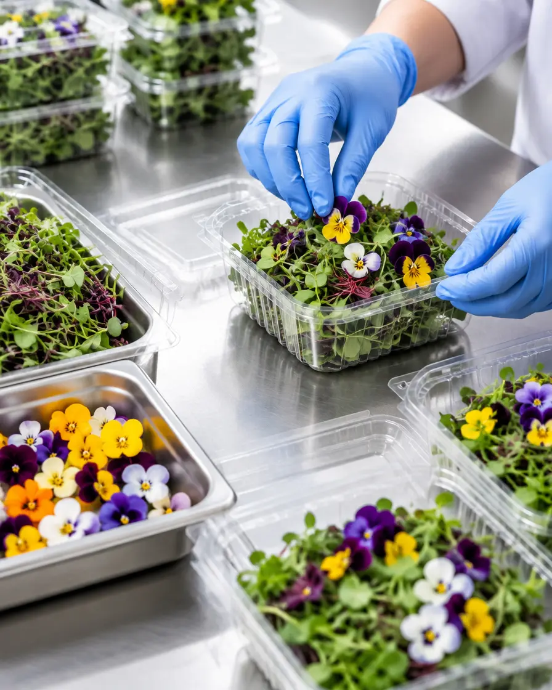
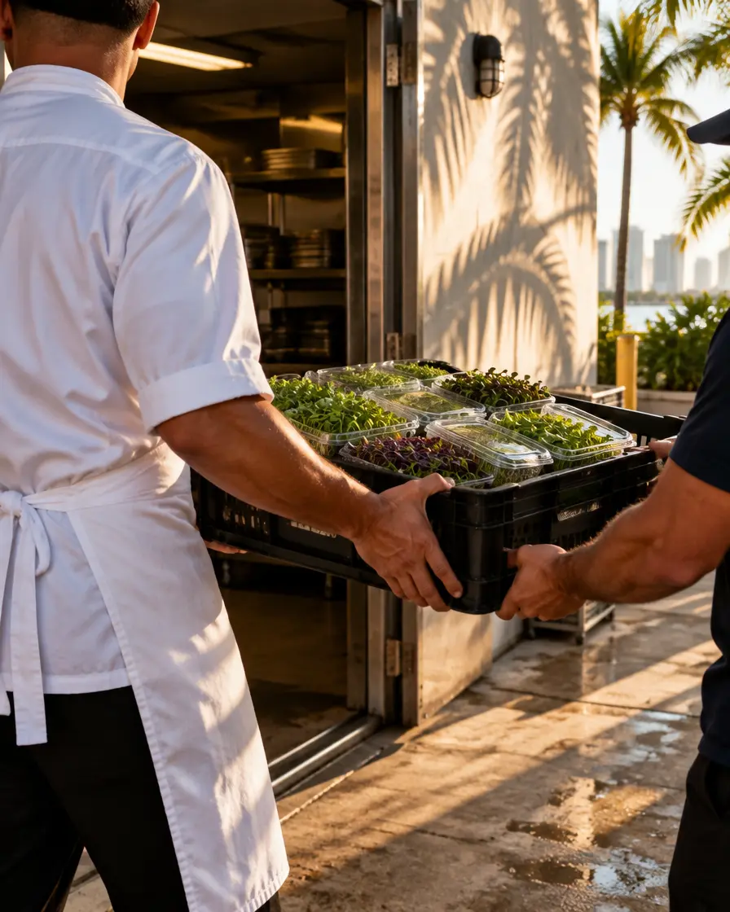
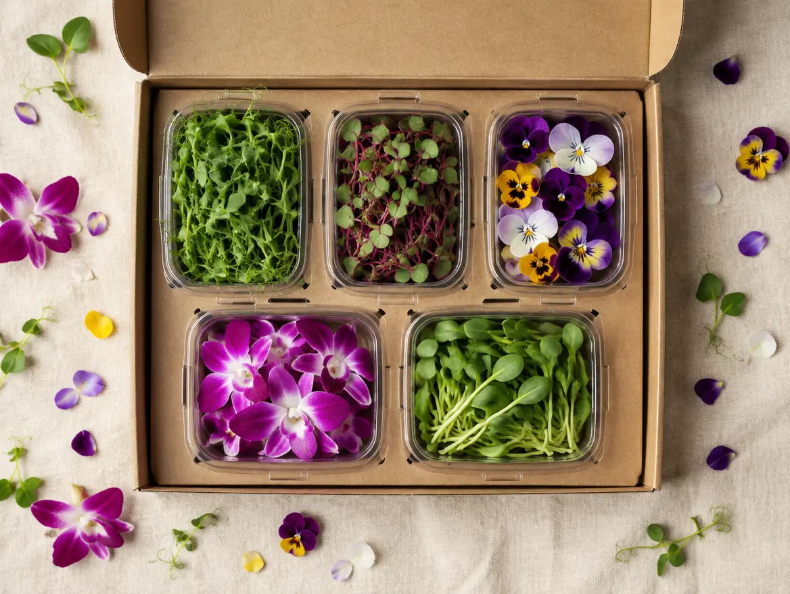
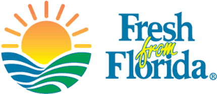
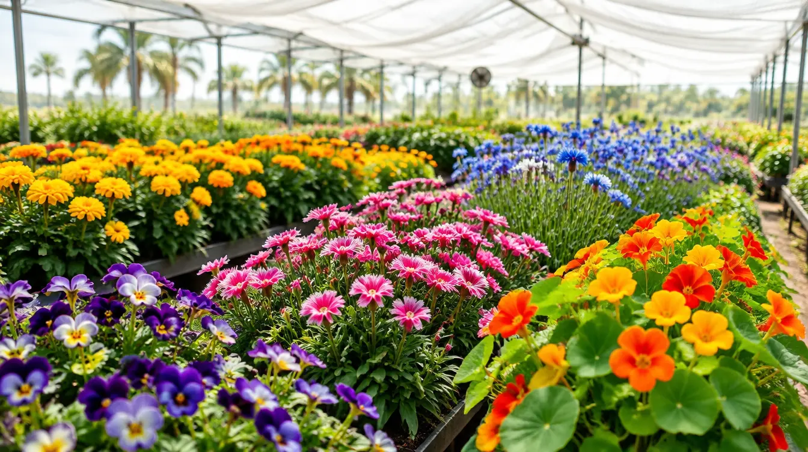

PrimusGFS certified
Our farm is audited to the PrimusGFS standard, recognized by the Global Food Safety Initiative (GFSI), from seeding to packing.
Indiantown, Florida · Family-owned farm
Premium microgreens, shoots & edible flowers, grown year-round on our South Florida farm, hand-packed the day they're cut and on your dock by the next route.
The quality difference
Harvested to order and chilled the same day, so every clamshell arrives with the color, bite and life chefs expect.
From Indiantown we're a short drive to every kitchen between the Treasure Coast and Miami. That's days fresher than product trucked in from out of state.
We grow twelve months a year. Everything in the catalog is available year-round, with no substitutions on standing orders.
Harvest to door





Hand-sown in Indiantown, Florida, under a PrimusGFS-audited process from seeding to packing.
Shoots, microgreens and flowers grown twelve months a year, so there are no seasonal gaps in your menu.
We harvest to order, never to inventory. Your greens are cut for your kitchen.
Packed by hand and chilled the same day, then held in an unbroken cold chain from farm to dock.
Out on the next daily route, invoiced on delivery day, with Net 30 terms for accounts.
A chef's toolbox
Everything below is grown year-round. Microgreens and shoots are packed by the ounce; flowers and leaves are counted. Tap + Sample to add up to five items to a free sample box.
Nothing matches that combo. Try another flavor, or ask us what's growing.

Free for chefs
Pick five items, tell us what you cook, and we'll put a sample box on the next delivery route. No obligation, no cost.
Fifteen edible flowers. Hand-picked, counted and packed flat for service.
Browse the flowers →
Where we deliver
Our farm sits in Martin County, a short drive from every major kitchen from the Treasure Coast to Miami. Beyond our direct routes, we reach kitchens statewide through leading foodservice distributors.
Thoughtful plating
Each recipe is built around products in our catalog. Use it as written or as a starting point, and send the ingredients to your sample box in one tap.
Giving back
donated to local food banks for every item you purchase. Fresh, healthy food is a right, not a privilege.

Our farm is audited to the PrimusGFS standard, recognized by the Global Food Safety Initiative (GFSI), from seeding to packing.

Grown in Florida, for Florida kitchens. Growing locally cuts food miles and builds a more resilient food system for our communities.
Built on unit economics and a customer-first approach, as a farming company. We hold ourselves to the highest standards of safety and quality.

Farm tours
A guided 1 to 2 hour tour of the farm, tastings, and a hands-on microgreen grow kit for every guest. Great for kitchen teams, schools and food lovers.
Consulting
We've built ours on real unit economics. Tell us about your project and we'll share what we've learned growing microgreens and edible flowers at commercial scale.
Talk to us about Build a Farm →Common questions
Our farm in Indiantown, Florida grows over 40 varieties of microgreens, shoots and edible flowers year-round, plus mixes like our Rainbow Mix, Chef's Blend, Spicy Mix and Hype Mix. Every harvest is packed by hand the same day it's cut.
Yes. We grow twelve months a year, so there are no seasonal gaps and no substitutions on standing orders.
Microgreens and shoots come in 8 oz clamshells, with delicate items (popcorn shoots, nasturtium shoots, micro bulls blood, micro wasabi, micro chives) in 4 oz. Edible flowers are packed by count: 25 ct for squash blossoms, 50 ct for most blooms, 100 ct for orchids and shiso leaf, 200 ct for pentas, dianthus and the assorted blend. Petal mixes are 2 oz.
Yes. Build a sample box above, tell us what you cook, and we'll put it on the next delivery route.
Every day, so product arrives at peak freshness. We serve Miami, the Palm Beaches, Tampa, Orlando and points between, direct and through distribution partners.
Yes. HyperLocal Farms is PrimusGFS certified, a GFSI-recognized standard, with a cold chain from harvest to your dock.
Browse the full catalog on this page or download the 2026 catalog. For pricing, email our sales team at orders@hyperlocalfarms.ag.
Minimums depend on route and account type. Get in touch and we'll confirm for your location.
Invoices are issued the day your produce is delivered, by email and with a physical copy at delivery. We accept checks, credit cards and ACH, payments can be made online, and automatic payments can be set up. We provide Net 30 terms.
Both. We deliver direct across South Florida and supply foodservice distributors statewide, so you can order from us or ask your distributor for HyperLocal Farms by name.
We do. Tours last about 1 to 2 hours and include a guided tour, tastings and a microgreen grow kit for every attendee. $25 per person for groups of up to 10; larger groups on request.
Become a customer